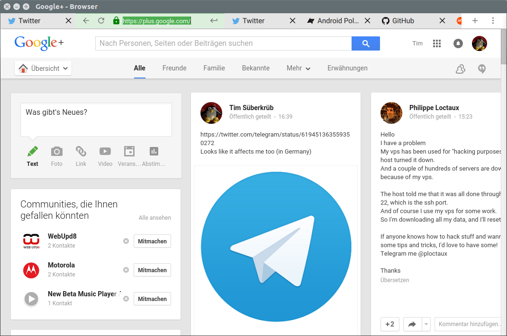
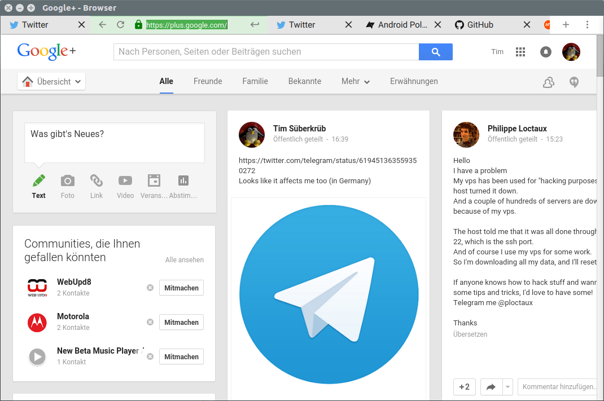

Material Browser
A minimalistic material design web browser written for Papyros (https://github.com/papyros/)
See http://papyros.io for more information about Papyros.

Screenshots
 

Translations
Please help us translating this application! Read this guide to get started: https://github.com/tim-sueberkrueb/material-browser/wiki/Translations
Installation on Linux
Simple Installation Script
If you just want to try material-browser out you can use our simple installation script. It will download and install Qt 5.5 and all necessary dependencies:
https://gist.github.com/tim-sueberkrueb/bdaae352cc6dcaca19b3
Dependencies
- Qt 5.5 and QtWebEngine 1.1 (http://qt.io)
- qml-material (https://github.com/papyros/qml-material)
- qml-extras (https://github.com/papyros/qml-extras)
Instructions
- Install Qt 5.5 (https://www.qt.io)
- Install qml-material
- git clone https://github.com/papyros/qml-material.git
- cd qml-material
- qmake
- make
- make check # Optional, make sure everything is working correctly
- sudo make install
- Install qml-extras
- git clone https://github.com/papyros/qml-extras.git
- cd qml-extras
- qmake
- make
- make check # Optional, make sure everything is working correctly
- sudo make install
Build and Run
- git clone https://github.com/tim-sueberkrueb/material-browser.git
- cd material-browser
- qmake
- make
- run material-browser executable
Copyright and License
(C) Copyright 2015 by Tim Süberkrüb and contributors
See CONTRIBUTORS.md for a full list of contributors.
This application is free software: you can redistribute it and/or modify it under the terms of the GNU General Public License as published by the Free Software Foundation, either version 3 of the License, or (at your option) any later version.
See LICENSE for more information.